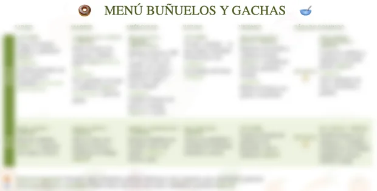
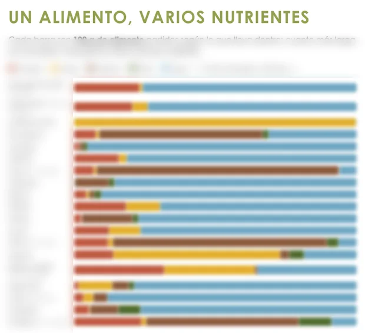
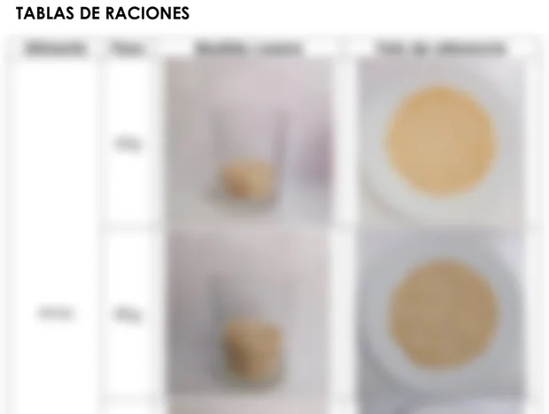

Hábitos saludables sin dietas ni báscula
Para mejorar tu alimentación de forma realista: aprender a organizar tu menú, entender las raciones y escuchar tu hambre y tu saciedad, sin centrarlo todo en el peso y sin depender de una dieta.

Este servicio es para ti si…
- Llevas años empezando dietas y dejándolas.
- No sabes organizar un menú semanal que te funcione.
- Comes deprisa, picas entre horas o no distingues hambre de ganas de comer.
- Quieres comer mejor sin contar calorías ni pesarte cada semana.
- Quieres mejorar tu composición corporal o tu rendimiento con una base sólida.
Cómo funciona
- Primera consulta · 1 hora
Conocernos
Hablamos de tus hábitos, tu día a día, tus gustos y lo que quieres conseguir. Es la sesión en la que más pregunto.
- En 3 días como máximo
Tu menú
Recibes tu menú de temporada para dos semanas, su explicación y la guía fotográfica de raciones con medidas caseras: sin pesar la comida.
- Seguimientos · cada 2 o 3 semanas
Una herramienta nueva cada vez
Revisamos cómo vas y en cada sesión te llevas algo nuevo: montar un plato completo, organizar tus tuppers, reconocer tu hambre y tu saciedad o leer etiquetas.
- Al final
Tu propio menú
Las consultas se van espaciando hasta que sabes organizar tu alimentación por tu cuenta.
Si quieres aprenderlo todo desde la base, el Bono 10 sesiones es un minicurso de nutrición a tu ritmo, con un tema en cada sesión.
Lo que te llevas a casa
Todo el material es propio y lo recibes en PDF para tenerlo siempre a mano. Estas son algunas muestras.




Cuánto cuesta
Pago por adelantado mediante transferencia bancaria. Te explico cómo al reservar.
- Bono inicio · 1.ª + 3 seguimientos
- 180 €
- Bono 10 sesiones · minicurso
- 400 €
- Consultas sueltas
- 55 € / 45 €